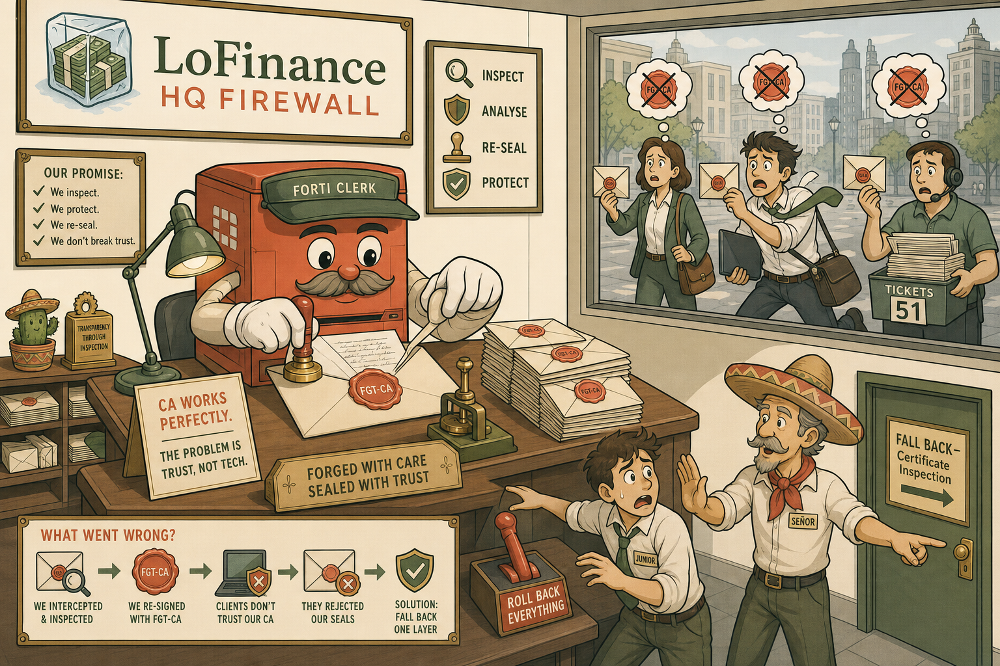
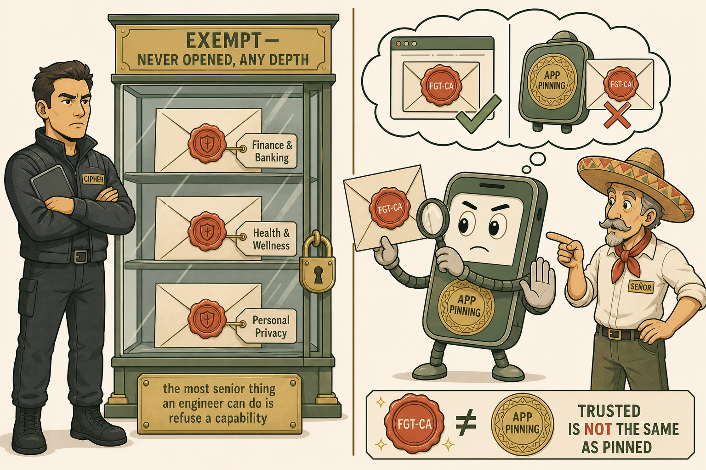
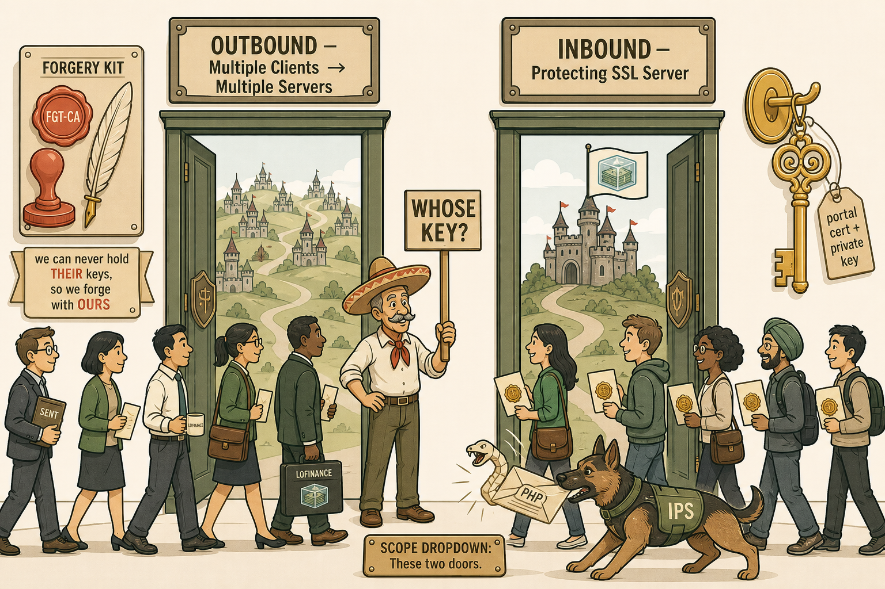
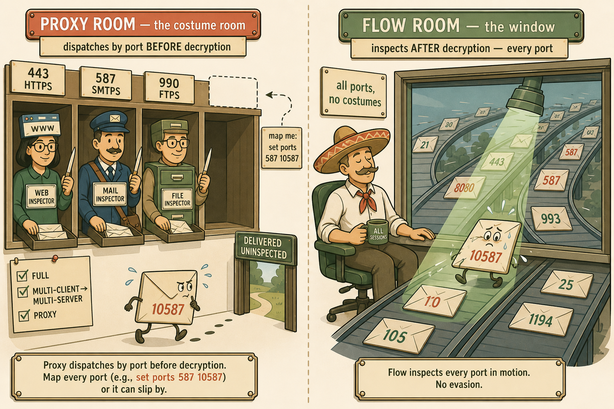
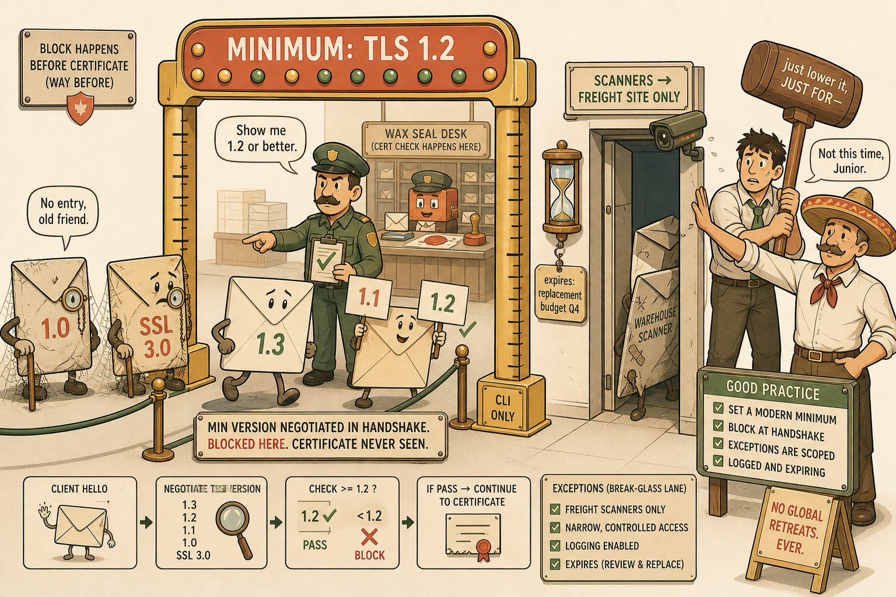

Room 1 — The Morning the Forgery Desk Panicked
The CA-distribution disaster: a perfect forgery nobody was told to trust.

Image 1 · "A Flawless Forger, An Untrusting City"
[ IMAGE PLACEHOLDER — 16:9 ]
Image Generation Prompt
Flat minimalistic but highly detailed vector illustration, cream off-white background, coral accents, muted gold highlights, sage greens, soft brown outlines, bold clean line work, no gradients, no photorealism, storybook-educational mood. Interior of a grand mail-sorting office labelled "LoFinance HQ FIREWALL" with the LoFinance logo (stacks of banknotes frozen inside an ice cube) on the wall. Centre: a meticulous clerk at a forgery desk flawlessly re-sealing an opened envelope with a shiny new coral wax stamp reading "FGT-CA", surrounded by perfectly re-sealed letters. Through a large window on the right, a city street of recipients — an office worker, a trader in a loosened tie sprinting with a laptop, a help-desk worker (headset, overflowing ticket tray labelled "51") — all holding letters at arm's length with alarmed expressions; above each recipient a small thought bubble showing the coral wax stamp crossed out. A younger engineer (Junior, youthful, slightly overconfident posture now deflated) reaches toward a big red lever labelled "ROLL BACK EVERYTHING" while a calm senior engineer in a sombrero (Señor) gently blocks his hand and points instead at a small side door labelled "FALL BACK — Certificate Inspection". Visual hierarchy: forger's desk brightest, rejecting crowd second, lever/door third. Must NOT appear: real bank logos, gore, dense technical text, gradients. Learning purpose: the CA works perfectly; the failure is missing trust — and the fix is falling back one layer, not rolling back to zero.
Anchors: all-sites blast radius = trust-store failure; fall back ≠ roll back.
Room 2 — The Shelf of Envelopes We Never Open
Exemptions and pinning: sealed forever, and sealed with a seal only the recipient knows.

Image 2 · "The Never-Open Shelf and the Wax-Seal Inspector"
[ IMAGE PLACEHOLDER — 3:2 ]
Image Generation Prompt
Flat detailed vector illustration, cream background, coral/gold/sage palette, soft brown outlines, no gradients, storybook-educational. Left half: a locked glass display shelf labelled "EXEMPT — NEVER OPENED, ANY DEPTH" holding three pristine sealed envelopes tagged "Finance & Banking", "Health & Wellness", "Personal Privacy"; a stern security lead (Cipher — male, composed, restrained posture, dark practical clothing, tablet under one arm) stands guard, and a small brass plaque reads "the most senior thing an engineer can do is refuse a capability". Right half: a charming robot courier shaped like a mobile banking app (phone-shaped body, tiny legs) holds up an incoming letter bearing a technically perfect coral "FGT-CA" wax seal; the robot's chest has an engraved gold seal pattern, and it holds a magnifying glass comparing the two — the seals visibly differ — with a firm "NO" gesture. Above the robot, a split thought bubble: left side a browser window happily accepting the coral seal (green tick), right side the robot's engraved seal (red cross on the coral one). Sombrero-wearing Señor points at the robot for the viewer's benefit. Must NOT appear: real bank branding, text paragraphs, gradients. Learning purpose: exemptions are permanent design; pinning lives in the app and rejects even trusted forgeries — trusted ≠ pinned.
Anchors: exempt = zero inspection; three permanent reasons; browser-vs-app fingerprint.
Room 3 — The Two Doors: Whose Private Key?

Image 3 · "Forgery Door, Vault Door"
[ IMAGE PLACEHOLDER — 16:9 ]
Image Generation Prompt
Flat detailed vector illustration, cream background, coral/gold/sage palette, brown outlines, no gradients. One wall of the sorting office with two large doors side by side. LEFT door labelled "OUTBOUND — Multiple Clients → Multiple Servers": beyond it, dozens of tiny distant unfamiliar castles (unknown internet servers) on rolling hills; mounted beside this door is a forgery kit — coral wax, stamp, quill — with a caption ribbon "we can never hold THEIR keys, so we forge with OURS"; a queue of LoFinance office workers passes through. RIGHT door labelled "INBOUND — Protecting SSL Server": beyond it stands a single proud castle flying the LoFinance frozen-money flag (banknotes in an ice cube); hanging beside this door on a gold hook is one large ornate REAL golden key tagged "portal cert + private key"; a diverse queue of unfamiliar visitors (internet clients) enters, each smiling, each shown a genuine gold seal; a small IPS guard dog beside the right door catches a snake-shaped letter labelled "PHP" mid-air. Señor stands between the doors holding a signpost that reads "WHOSE KEY?". Visual hierarchy: the two keys (forged coral vs real gold) are the brightest elements. Must NOT appear: gradients, photorealism, real logos. Learning purpose: full inspection always requires a private key — outbound forges, inbound owns; the scope dropdown is literally these two doors.
Anchors: the 2×2 ownership table; scope names welded to directions; why inbound has zero client pain.
Room 4 — The Pigeonhole Wall vs The Window

Image 4 · "No Pigeonhole Labelled 10587"
[ IMAGE PLACEHOLDER — 16:9 ]
Image Generation Prompt
Flat detailed vector illustration, cream background, coral/gold/sage palette, brown outlines, no gradients. Split scene. LEFT ("PROXY ROOM — the costume room"): a wall of labelled pigeonholes — "443 HTTPS", "587 SMTPS", "990 FTPS" — each staffed by an inspector wearing a themed costume (web inspector in a browser-window hat, mail inspector dressed as a postman, file inspector with a filing-cabinet vest); every inspector holds a letter-opener. One sly envelope stamped "10587" tiptoes past an EMPTY unlabelled gap in the wall, unopened, sweating slightly, heading for an exit marked "DELIVERED UNINSPECTED"; a dotted outline of a missing pigeonhole with a hovering label "map me: set ports 587 10587" invites the fix. Small checklist pinned to the wall with three ticked boxes: "FULL", "MULTI-CLIENT→MULTI-SERVER", "PROXY". RIGHT ("FLOW ROOM — the window"): a serene single watcher seated at a huge window overlooking a fast conveyor of envelopes of every number (10587 included), a beam of sage-green light scanning each one in motion; caption ribbon "all ports, no costumes". The same sly 10587 envelope is caught in the beam here, looking defeated. Must NOT appear: gradients, real logos, clutter that hides the empty pigeonhole. Learning purpose: proxy dispatches by port before decryption (mapping required, three preconditions); flow inspects every port — the evasion fails there.
Anchors: the three preconditions; "costume room is proxy, window is flow" — the label-weld this session demanded.
Room 5 — The Version Gate and the Narrow Doorway

Image 5 · "Minimum Height: TLS 1.2"
[ IMAGE PLACEHOLDER — 3:2 ]
Image Generation Prompt
Flat detailed vector illustration, cream background, coral/gold/sage palette, brown outlines, no gradients. A checkpoint gate at the sorting-office entrance shaped like an amusement-park height marker labelled "MINIMUM: TLS 1.2" with a small engraved note "CLI ONLY" on its base. Envelopes queue as characters: a sleek modern envelope "1.3" strides through; an envelope holding two signs "1.1" AND "1.2" is admitted (the gatekeeper points at the 1.2 sign, ticking it); two dusty antique envelopes "1.0" and "SSL 3.0" with cobwebs and monocles are politely turned away BEFORE reaching the wax-seal desk visible further inside (emphasising the block happens pre-certificate). To the side: a very narrow, well-lit side doorway exactly the width of one envelope, labelled "SCANNERS → FREIGHT SITE ONLY", with a mounted hourglass and a tag "expires: replacement budget Q4"; one battered warehouse-scanner-shaped envelope squeezes through while a logging camera watches. Junior in the background holds a huge sledgehammer labelled "just lower it, JUST FOR—" while Señor confiscates it. Must NOT appear: gradients, real branding. Learning purpose: minimum-version negotiation logic; handshake-level blocking; scoped, logged, expiring exceptions instead of global retreats.
Anchors: 1.1+1.2 = allowed; CLI-only; block-before-certs; the exception-with-expiry design rule.
Walk the Palace
One building, five rooms, in order: the forgery desk that nobody trusted → the never-open shelf and the wax-seal robot → the two doors and their keys → the pigeonhole wall and the window → the height gate and the narrow doorway. Walk it once before the exam; each room fires one cluster of S21 answers.